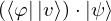
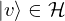
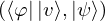
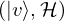
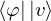
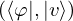
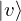

Expression of type Conditional¶
from the theory of proveit.physics.quantum.algebra¶
In [1]:
import proveit
# Automation is not needed when building an expression:
proveit.defaults.automation = False # This will speed things up.
proveit.defaults.inline_pngs = False # Makes files smaller.
%load_expr # Load the stored expression as 'stored_expr'
# import Expression classes needed to build the expression
from proveit import Conditional
from proveit.linear_algebra import Hspace, ScalarMult
from proveit.logic import InSet
from proveit.physics.quantum import Qmult, bra_varphi, var_ket_psi, var_ket_v
In [2]:
# build up the expression from sub-expressions
expr = Conditional(ScalarMult(Qmult(bra_varphi, var_ket_v), var_ket_psi), InSet(var_ket_v, Hspace))
In [3]:
# check that the built expression is the same as the stored expression
assert expr == stored_expr
assert expr._style_id == stored_expr._style_id
print("Passed sanity check: expr matches stored_expr")
In [4]:
# Show the LaTeX representation of the expression for convenience if you need it.
print(stored_expr.latex())
In [5]:
stored_expr.style_options()
In [6]:
# display the expression information
stored_expr.expr_info()
| core type | sub-expressions | expression | |
|---|---|---|---|
| 0 | Conditional | value: 1 condition: 2 | |
| 1 | Operation | operator: 3 operands: 4 |  |
| 2 | Operation | operator: 5 operands: 6 |  |
| 3 | Literal |  | |
| 4 | ExprTuple | 7, 8 |  |
| 5 | Literal |  | |
| 6 | ExprTuple | 13, 9 |  |
| 7 | Operation | operator: 10 operands: 11 |  |
| 8 | Variable |  | |
| 9 | Variable |  | |
| 10 | Literal |  | |
| 11 | ExprTuple | 12, 13 |  |
| 12 | Operation | operator: 14 operand: 16 |  |
| 13 | Variable |  | |
| 14 | Literal |  | |
| 15 | ExprTuple | 16 |  |
| 16 | Variable |  |